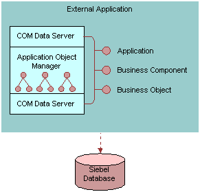

COM Data Server
The following image illustrates how an external application uses the COM Data Server that does not include user interface objects. The COM Data Server uses the same technology that the Siebel Mobile Web Client uses to connect to the Siebel database.

The COM Data Server includes the following requirements:
The way your configuration starts a Siebel COM server depends on the programming tool or language you use.
The COM Data Server runs without the Siebel client, so you must use the Login method to set up your Data Server object.
No current active Siebel objects exist, so you cannot use an object interface method that returns active Siebel objects. You must use your own Siebel objects.
If you use Microsoft Visual Basic version 5.0 or later, then the sobjsrv.tlb file must reside in the same folder as the Siebel application configuration (CFG) file. If this file does not reside in the correct folder, then the COM Data Server does not work.
Do not run the Microsoft VB Debug environment while your configuration communicates with the COM Data Server.
If your configuration uses the COM Data Server, then the COM client cannot create multiple connections to the Siebel COM Server. You must restart the COM client before you can attempt another connection. Use COM Data Control instead.
Calls made to the COM Data Server are in process. For more information, see How Siebel CRM Uses Memory and Resources with the Mobile Web Client Automation Server.
Note the different ways that the following servers handle DLLs:
COM Data Server. A DLL runs in the same address space where the calling program runs.
Mobile Web Client Automation Server. An executable runs in a dedicated address space. A DLL that a server task accesses must be capable of running in a multithread environment.
For more information, see Accessing the COM Data Server.